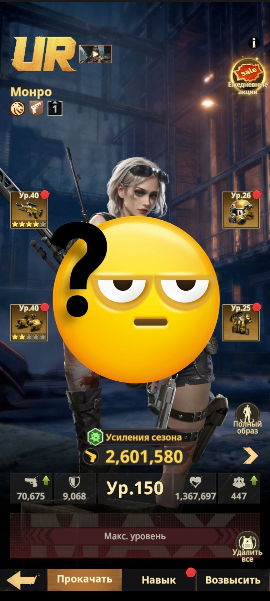
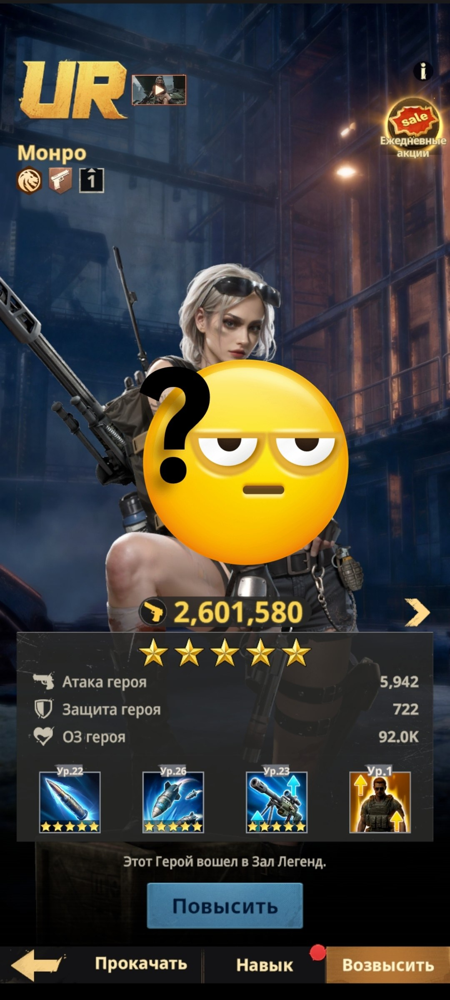
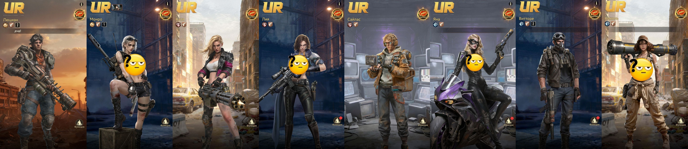
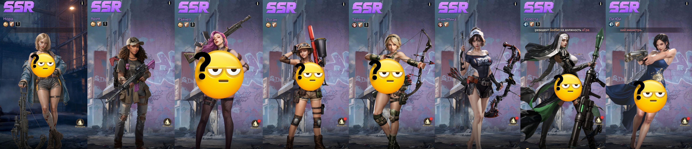
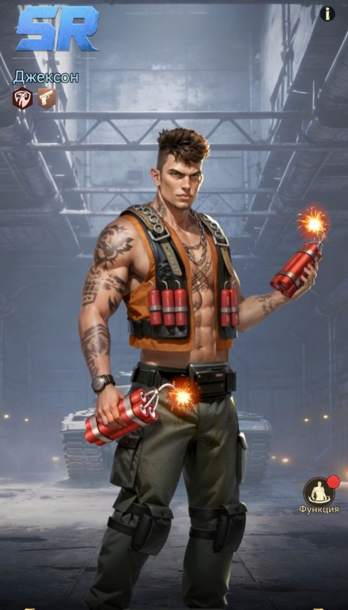

💥 Ударники
💥 УДАРНИКИ Ударники - это герои, наносящие основной удар по отряду противника. 📍 Поэтому их необходимо размещать сзади, на задней линии, чтобы они могли безопасно наносить максимальный урон, пока танки принимают на себя атаки врага. 🎯 Приоритет развития - Монро В первую очередь качайте и улучшайте Монро: именно она будет наносить невероятно большое количество урона по противникам и со временем превратится в незаменимую боевую единицу.

Монро - развитие героя

Монро - характеристики и навыки

UR/Золотые герои-ударники

SSR/Фиолетовые герои-ударники

SR/Синий герой-ударник